October to March is the best time to visit Aihole.Read More
Aihole
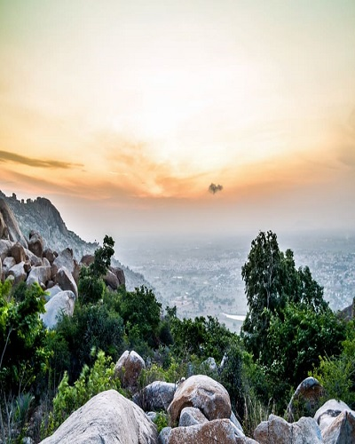
Anthargange
October to March is the best time to visit Anthargange when the monsoon drifts away, and the cold starts to settle in.Read More
Anthargange
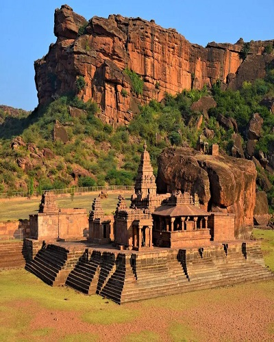
Badami
The ideal time to visit Badami is post-monsoon and winter i.e. from July to March.Read More
Badami
Bandipur National Park
Best period to visit this place in monsoon season is between July and September.Read More
Bandipur National Park
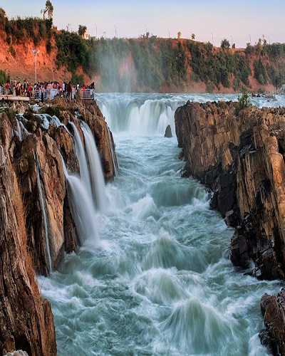
Bangalore
October to February: The winter months in Bangalore are the best time to visit the city.Read More
Bangalore
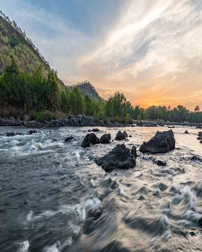
Bheemeshwari
Bheemeshwari is accessible to tourists around the year. The monsoons are the best times. This is the time when the forest and hills are lush green and Cauvery river will be in its full form - June to August. Post monsoon, August to October is also a good time.Read More
Bheemeshwari
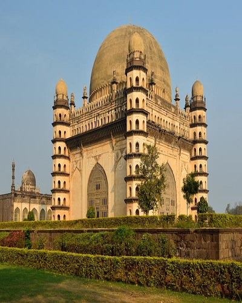
Bijapur
October to February are the best months to visit Bijapur because of the weather conditions.Read More
Bijapur
Br Hills
The best time to visit BR Hills is from October to March, as the weather is perfect to bask the beautiful. Read More
Br Hills
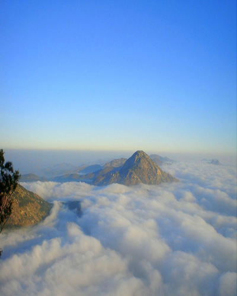
Chikballapura
The period from June to February is the best time to visit Chikkaballapur because the Jaramadagu Falls will have water during this period and has a spectacular view. Read More
Chikballapura
Chikmagalur
The best time to visit Chikmagalur is from September to May.Read More
Chikmagalur
Coorg
The best time to visit Coorg is during the summer months between March and June. The best months are March and April, when the day time temperatures are comfortably hot.Read More
Coorg
Dandeli
The best time to visit Dandeli is from October to May.Read More
Dandeli
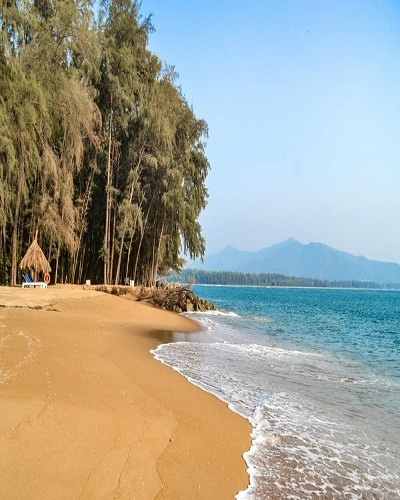
Devbagh
The best season to visit Devbagh is the winter season that lasts from October to February. The best months to visit are October, November, December, January and February. The summers in Devbagh are hot and generally avoided by the tourists.Read More
Devbagh
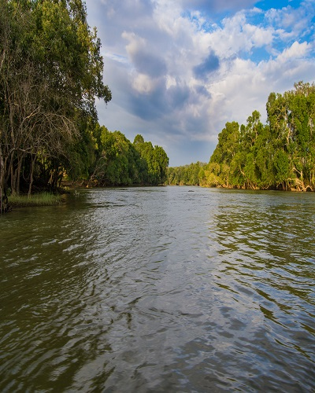
Dubare
The best season to visit Dubare is the winter season and the onset of summers. The best months to visit are September to March.Read More
Dubare
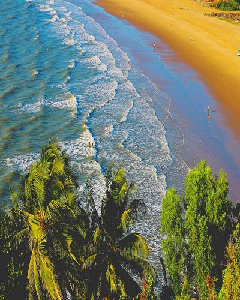
Gokarna
The best time to visit Gokarna is October, November, December, January and February.Read More
Gokarna
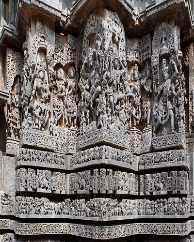
Halebidu
October to February are the best months to visit Halebid. The dance festival of Hoysala Mahotsava during March along with Mahashivratri and Diwali can also make your experience festive and all the more enjoyable.Read More
Halebidu
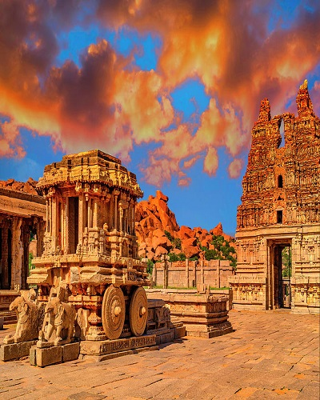
Hampi
Winter season is the best time to visit Hampi. Hampi Festival is one of the most enjoyable and well known festivals in Hampi that come in the month of November.Read More
Hampi
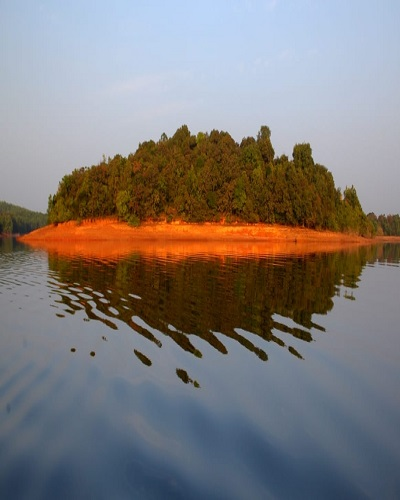
Honnemaradu
Early Winter (October-November).This time of the year is the best time if one wants to visit Honnemaradu.Read More
Honnemaradu
Jog Falls
The months of June till September witness heavy rainfall in the region. The monsoon season is the best season to visit Jog falls, as the beauty of the place is enhanced during monsoons.Read More
Jog Falls
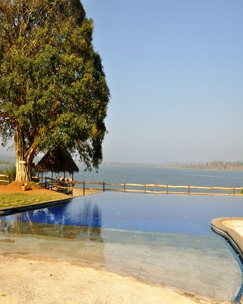
Kabini
The best time to visit Kabini is between November and January.Read More
Kabini
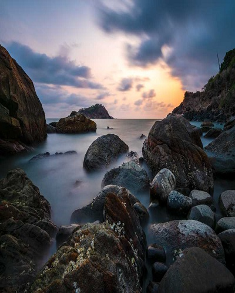
Karwar
The best season to visit Karwar is the winter season that lasts from October to February. The best months to visit are October, November, December, January and February.Read More
Karwar
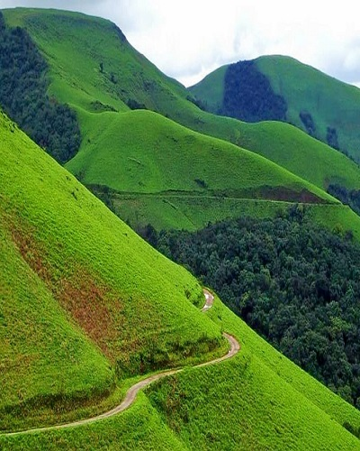
Kemmanagundi
Kemmanagundi has a lovely climate throughout the year but the best time to visit this place is from September to February. Read More
Kemmanagundi
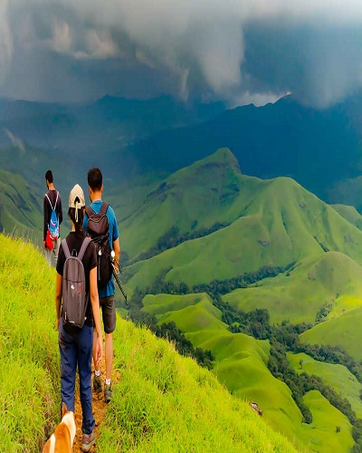
Kudremukh
Summers in the region start in March and last till May. It is the best time to visit Kudremukh for those having passion for trekking.Read More
Kudremukh
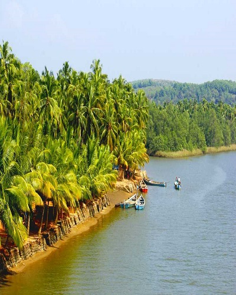
Kundapur
The best time to visit Kundapur is from the winter months of October to March when the weather is pleasant and less humid.Read More
Kundapur
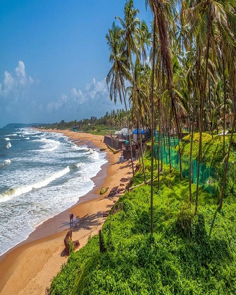
Mangalore
Mangalore is a Beach destination. The best time to visit Mangalore is October, November, December, January and February.Read More
Mangalore
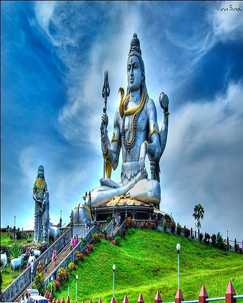
Murudeshwar
Murudeshwar is a Pilgrimage destination. The best time to visit Murudeshwar is October, November, December, January and February.Read More
Murudeshwar
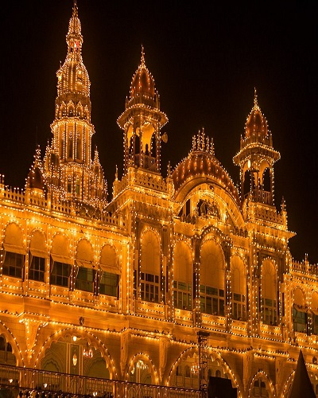
Mysore
Mysore has a tropical climate, but the best time to visit Mysore is from the Monsoons and Winter months from July to February.Read More
Mysore
Nagarhole National Park
Nagarhole National Park is open for public entry all the way through the year but the best time to visit the Nagarhole National Park is from April to May.Read More
Nagarhole National Park
Nandhi Hills
One of the best time to visit Nandi Hills surely indulge winters in the months of September-February. The early mornings will give chills with cold weather but sunrise amidst the clouds literally makes feel in the heaven. Between 6-6.30 am, one gets to kiss the sun and bask in its beauty.Read More
Nandhi Hills
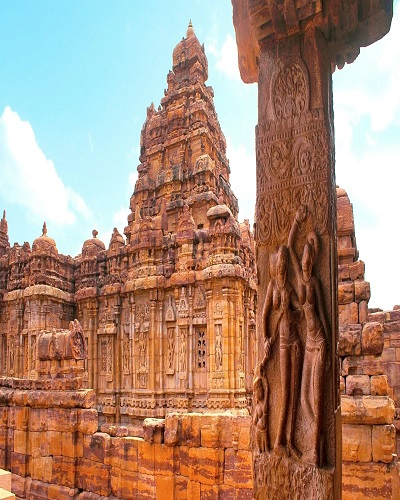
Pattadakal
The best season to visit this place is during winter, that is, from October to March.Read More
Pattadakal
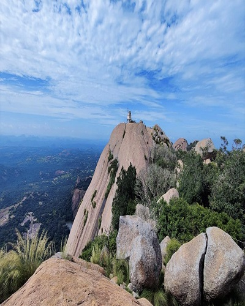
Savandurga
Summers(March-May) are a good time to visit Savandurga.Read More
Savandurga
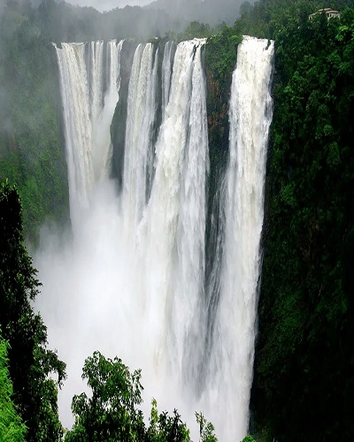
Shimoga
The best season to visit Shimoga is the winter season. The best months to visit are October to March. The Month of December marks the start of winter season in Shimoga. Temperature ranges between a comfortable 25°C to 37°C.Read More
Shimoga
Shivagange
The best time to visit Shivaganga hillock is between the winter months of November to FebruaryRead More
Shivagange
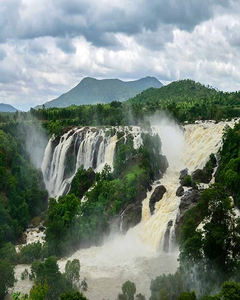
Shivanasamudra Falls
The timings for Shivanasamudra falls are 8:00 AM to 5:00 PM.The best time to visit Shivanasamudra falls is from September to January to witness the best weather and intensity of the waterfall.Read More
Shivanasamudra Falls
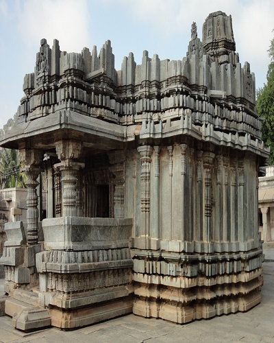
Shravanbelagola
The best season to visit Shravanabelagola is the winter season. The best months to visit are October to March.Read More
The best time to visit Sringeri is from the cooler months of October to March. The weather is more pleasant and is ideal for visiting the temple as well as exploring nature.Read More
Sringeri Temple
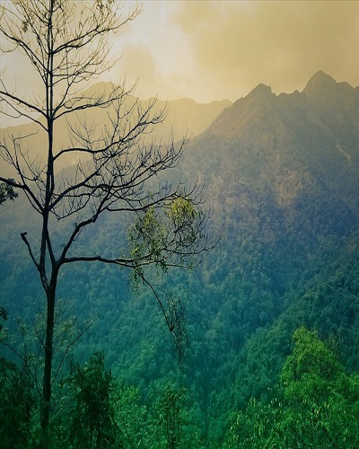
Thirthahalli
The entire region of Thirthahalli is situated 591 meters above sea level. The best time to visit is from October to March.Read More
Thirthahalli
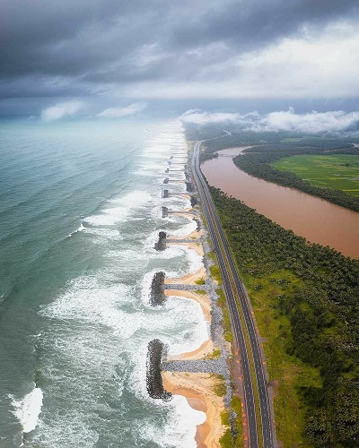
Udipi
Monsoon is the season which is also considered as the best time to visit Udupi as people can get greenery all around.Read More